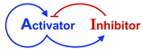
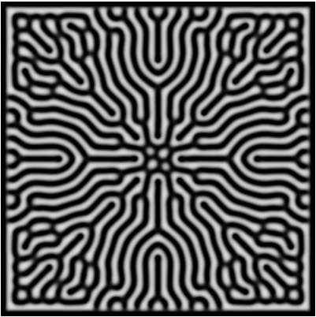
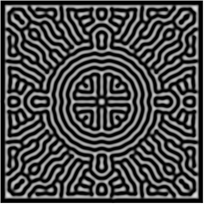

Morphogenesis (the origin of form) has been the biggest fascination of developmental biologists for over a century! One of the major breakthroughs to explain morphogenesis came from Alan Turing, who proposed that complex patterns could be formed by reaction-diffusion mechanisms of chemical species. Here's a simulation with just 2 chemical species. Species A is auto-catalytic and also activates species B. B inhibits A.
You can play around with the parameters to observe different patterns. It will take about 30s to notice anything interesting.
See if you can get any of the below patterns.
 